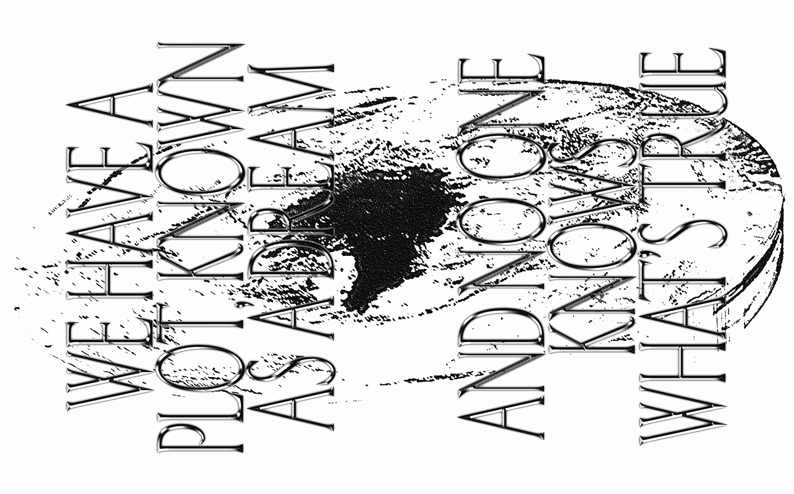
An excerpt of the editorial written for the project and some other relevant aspects:
«It is a Strange Realism, but It is a Strange Reality: For a Pact Between Design and Fiction in the Post-Truth Era is a project that stemmed from the post-truth era and the possible relations
with design and fiction.
Analysts claim that we are living in a post-truth era in which facts, truth and reality are increasingly undermined, while fiction is given a status upgrade. The relationship between fact and fiction, and truth and lie has become an increasingly tense one.
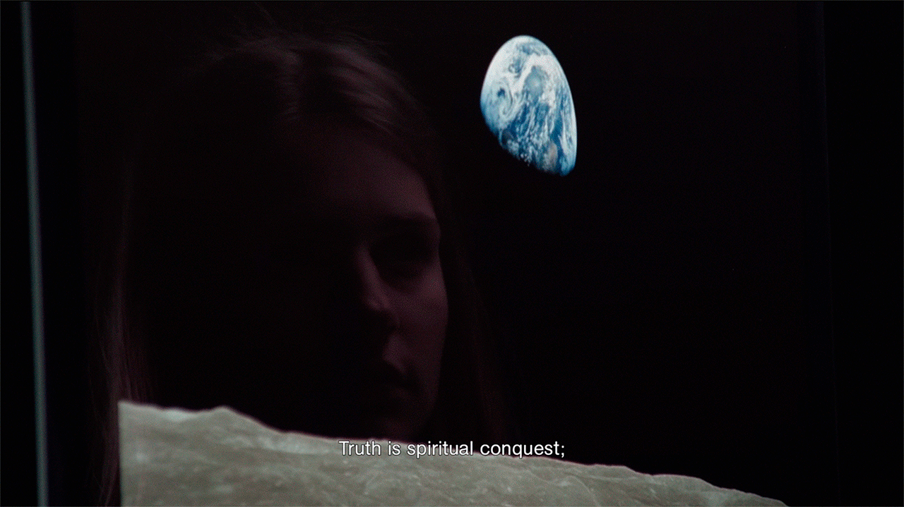
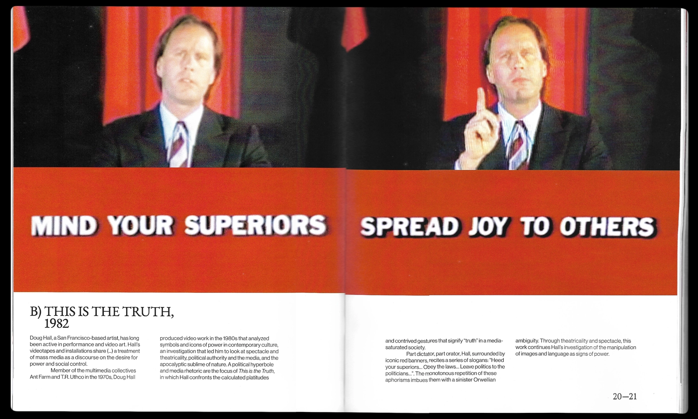
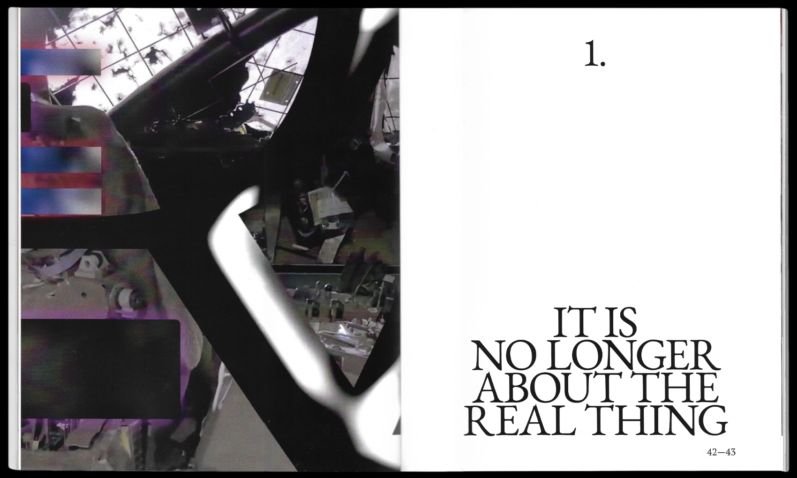
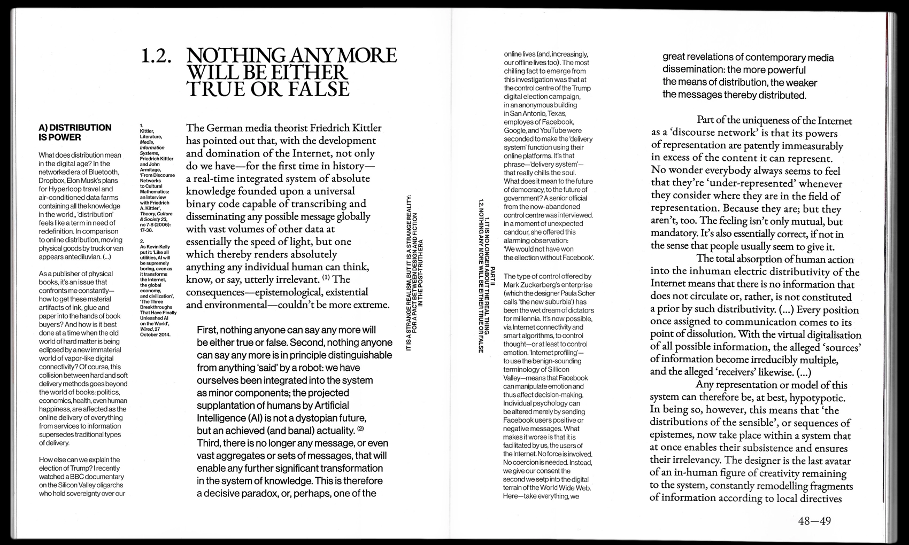
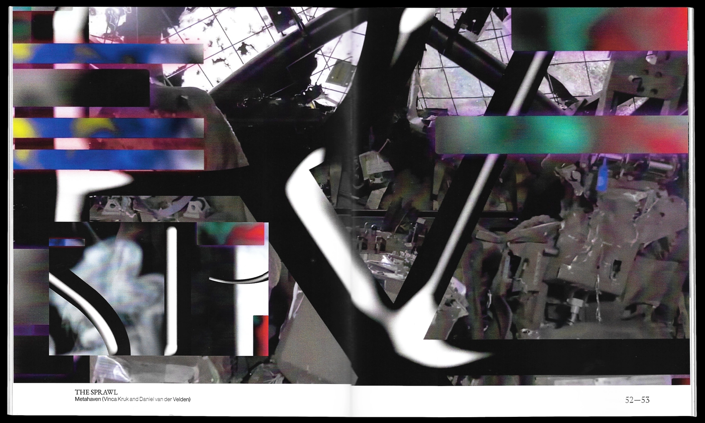
Fiction is the domain of the writer and the artist, not of the journalist or the politician. Not that fiction has nothing to do with truth and reality. Fiction can open up the world, clarify it, but also question it. Or offer a different perspective, at the very least.
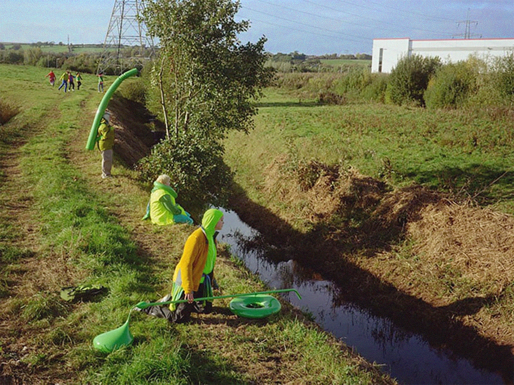
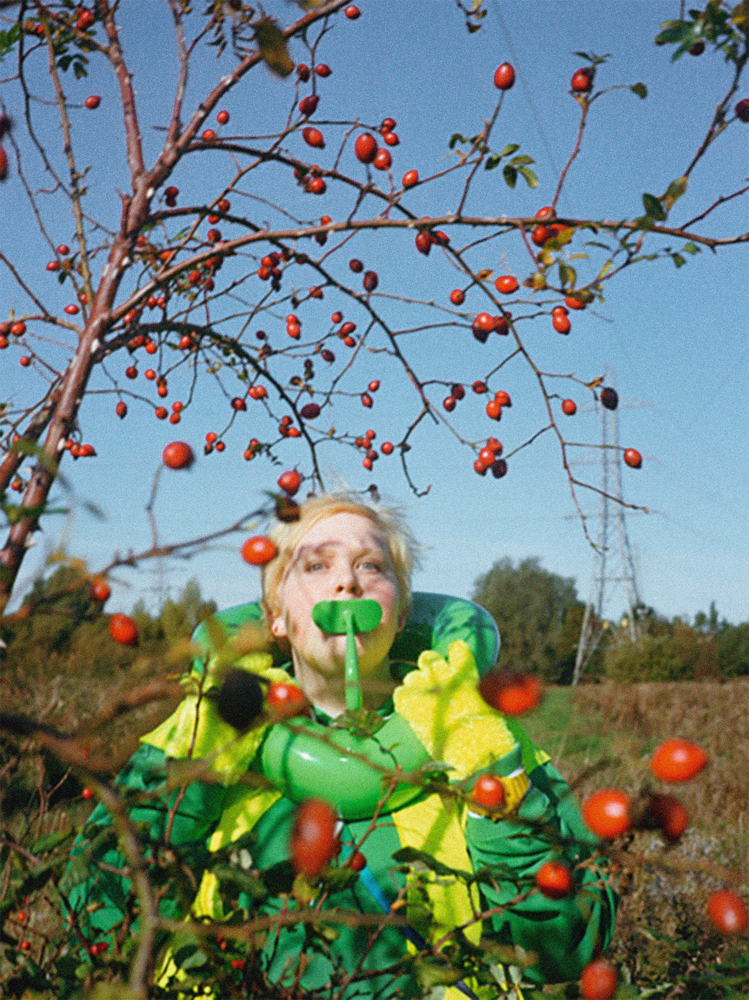
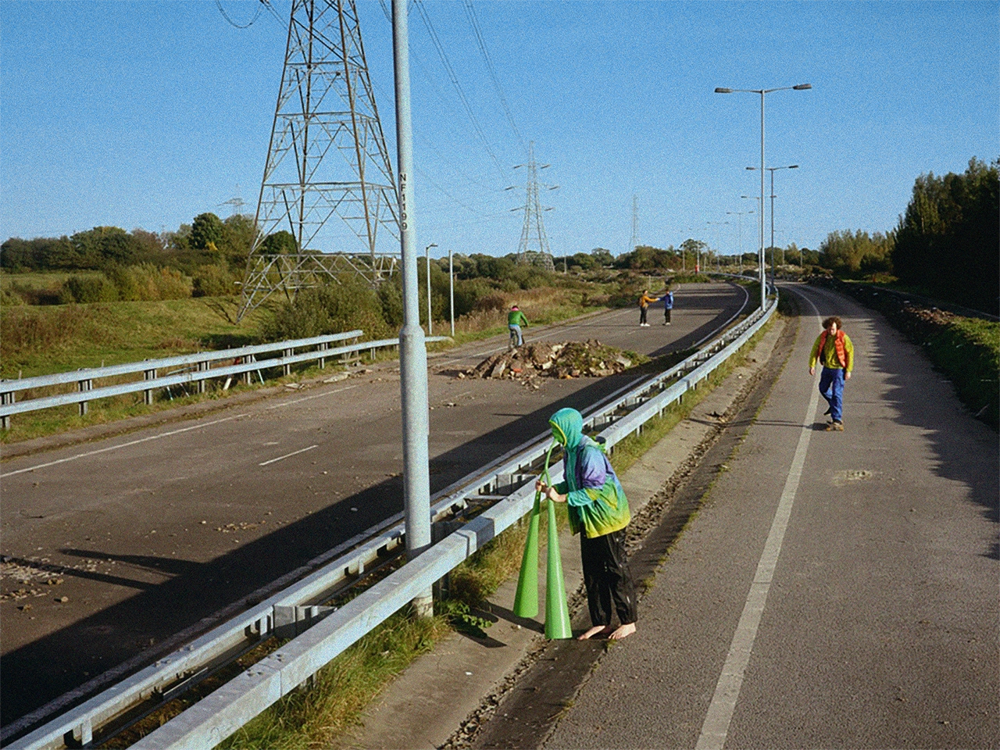
Fiction also hints at a wide range of possibilities. It allows us to think up and imagine other realities, explore new perspectives on the future, or represent something that is hard or even impossible to represent otherwise.
Artists often translate their empirical sources into an artistic universe and deliberately blur the boundaries between ‘fiction’ and ‘reality’. Indeed, they share a fascination with the same ‘problem’: the impossible challenge of representing reality.
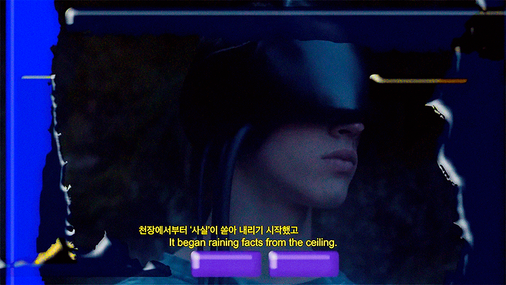
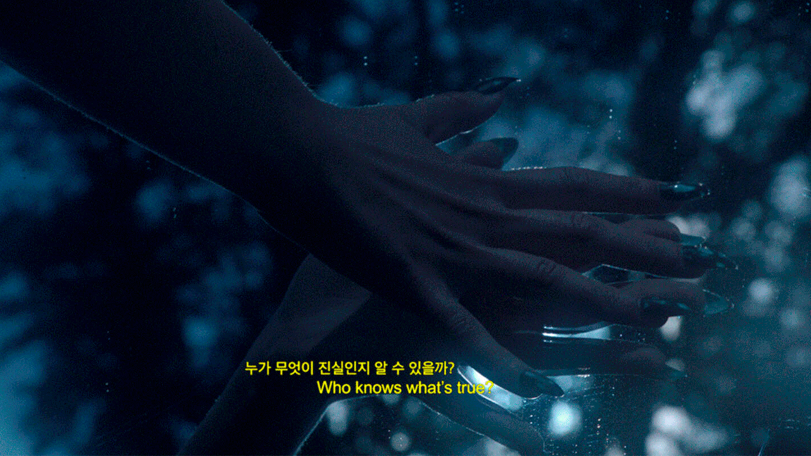
What might be the role of fiction at a time when fake news, alternative facts, and infotainment undermine the integrity of politics and the media? What is the place of the imagination in how we understand and create the reality around us? What is the notion of truth that underlies this work?»
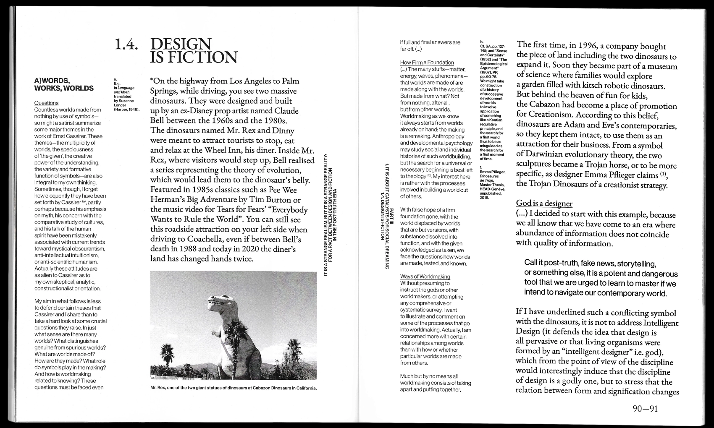
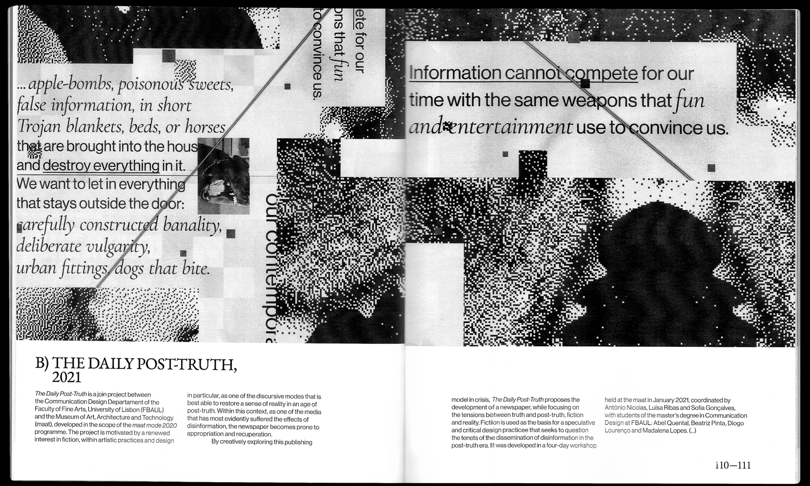
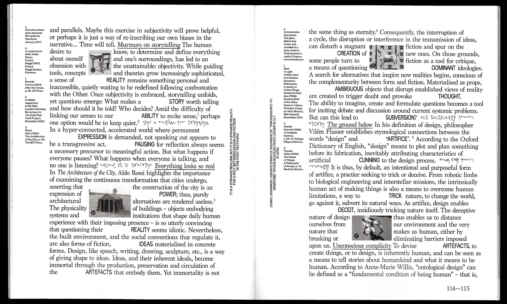
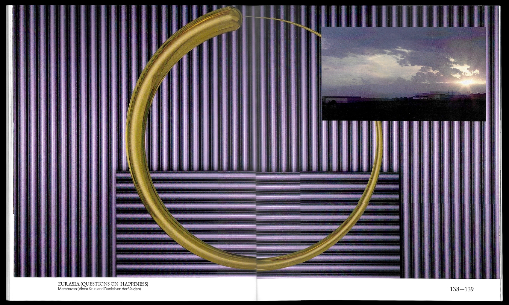
Besides the printed publication, which serves as the project's main container, there is also a website that has been built to expand on the theme of It is a Strange Realism, but It is a Strange Reality....
While the printed publication is focused on the theoretical issues, which are then briefly illustrated with projects, on the website there is a more conceptual exploration, so that the narrative of It is a Strange Realism, but It is a Strange Reality... is driven by a thought that, although linked to the theoretical side of the publication, is entirely influenced by what is presented about each project—from the selection of images of each one, to the prominence of phrases present in each project.
.gif)
1. Concept, research, editing, writting, editorial design, web design and site development
Duarte da Costa.
2. Main texts and projects
Abel Quental, Adrian Shaughnessy, Alexandra Midal, Andreas Bernard, Anthony Dunne, Ben Davis, Beatriz Pinta, Daniel Fallman, Daniel van der Velden (Metahaven), Diogo Lourenço, Doug Hall, Elise Kraatila, Fiona Raby, Justin Clemens, Lee C. McIntyre, Liliana Bounegru, Madalena Lopes, Matthew Beaumont, Michael Lynch, McKenzie Wark, Nele Wynants, Nelson Goodman, Paulo Pena, Sofia Gonçalves, Ursula K. Le Guin and Vinca Kruk (Metahaven).
3. Objects
Publication (241.5x300mm, 176pp.) and Website (Offline).